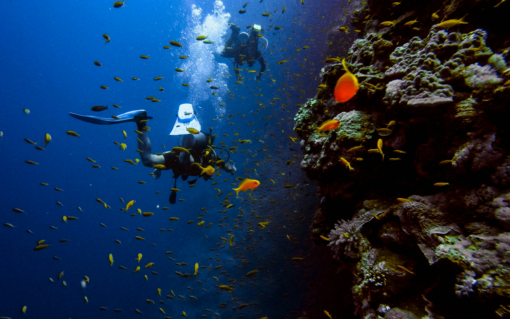

ACTIVITIES & EXCURSIONS
ACTIVITIES & EXCURSIONSDiscover the wonders of our tropical paradise and create unforgettable memories with our curated selection of activities and excursions.
On-Site Activities
Relaxation & Rejuvenation

- Yoga on the Beach: Start your day with a peaceful yoga session as the sun rises over the ocean. (Daily, complimentary)
- Guided Meditation Sessions:Find inner peace and tranquillity with our guided meditation sessions in the serene garden. (Daily, complimentary)
- Beachside Relaxation:Unwind on our pristine private beach with complimentary sun loungers and umbrellas.
- Infinity Pool RetreatTake a refreshing dip in our stunning infinity pool with breathtaking ocean views.
Adventure & Recreation

- Water Sports: Explore the crystal-clear waters with our range of water sports activities.
- Snorkeling: Discover vibrant coral reefs and marine life. (Equipment provided, fees may apply)
- Kayaking: Paddle along the coastline and explore hidden coves. (Rentals available)
- Stand-Up Paddleboarding: Enjoy a fun and invigorating workout on the water. (Rentals available)
- Beach Volleyball:Gather your friends and family for a friendly game of beach volleyball. (Complimentary)
- Fitness Center:Maintain your fitness routine in our state-of-the-art fitness center. (24/7 access)
- Kids' Club Activities:Let your children enjoy fun and engaging activities with our supervised Kids' Club. (Daily, various activities)
Local Excursions
Explore the Natural Beauty

- Coral Reef Snorkeling Tour: Embark on a guided snorkeling tour to explore the vibrant coral reefs and encounter diverse marine life. (Half-day excursion, fees apply)
- Island Hopping Adventure:Discover the surrounding islands with a scenic boat tour. (Full-day excursion, fees apply)
- Rainfall Hike & Waterfall VisitImmerse yourself in the lush rainforest and discover hidden waterfalls. (Half-day or full-day excursion, fees apply)
- Sunset Cruise:Enjoy a romantic sunset cruise along the coastline with breathtaking views. (Evening excursion, fees apply)
Cultural Experience

- Local Village Visit:Experience the authentic culture and traditions of the local village. (Half-day excursion, fees apply)
- Traditional Cooking Class:Learn to prepare local delicacies with a hands-on cooking class. (Half-day excursion, fees apply)
- Cultural Performance:Enjoy a captivating performance of traditional music and dance. (Evening event, fees may apply)
Adventure & Wildlife:
- Diving Excursions:Explore the underwater world with our certified diving instructors. (Various dive sites and packages available, fees apply)
- Wildlife Sanctuary Visit:Encounter exotic wildlife at a nearby sanctuary. (Half-day excursion, fees apply)
- Deep-Sea Fishing:Embark on a thrilling deep-sea fishing adventure. (Half-day or full-day excursion, fees apply)
Booking & Information
- Our concierge team is available to assist you with booking activities and excursions.
- Please inquire about availability and pricing for specific activities.
- Transportation to and from excursion locations can be arranged.
- Advance bookings are recommended, especially during peak season.
Create lasting memories at Shangri La Beach Resort with our diverse range of activities and excursions.